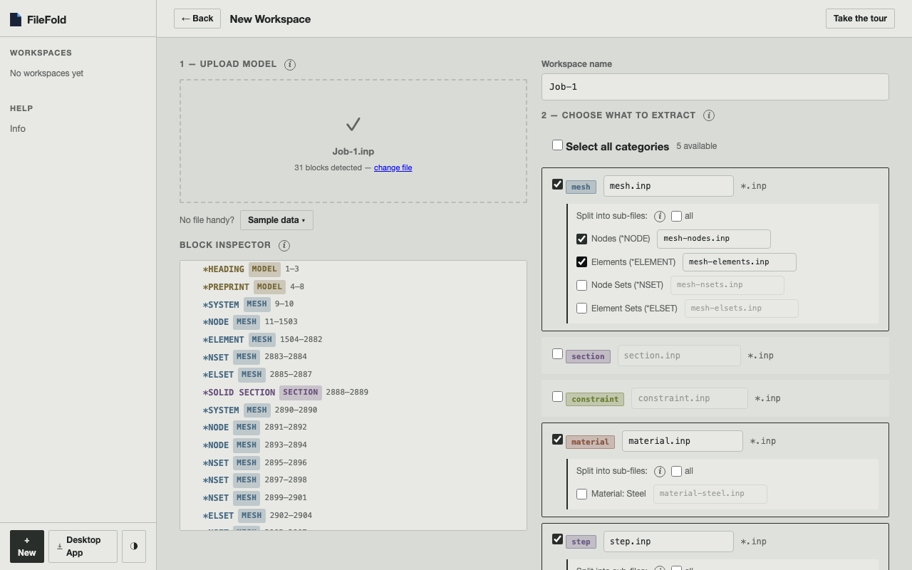
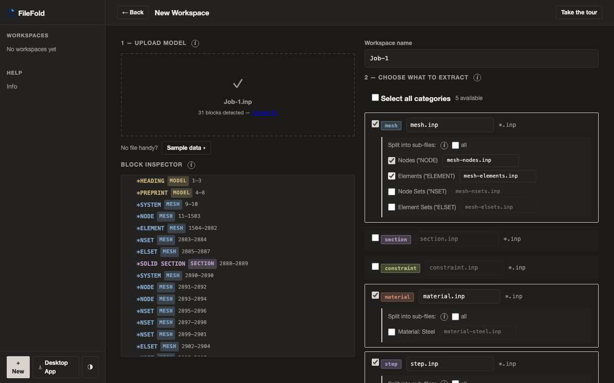
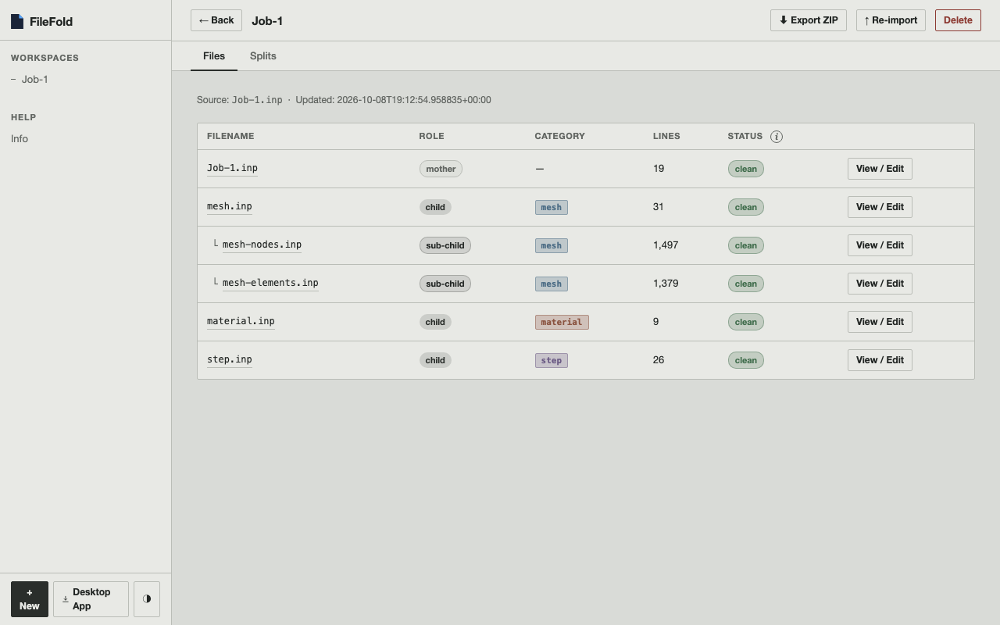
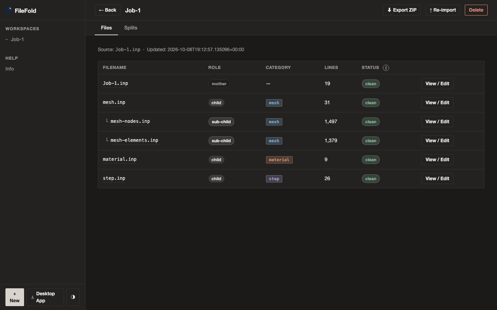

Abaqus .inp workspace manager
Tame your FEA models.
Split a large .inp file by category (*MESH, *MATERIAL, *STEP and more) or all the way down to one file per material, step or part. Track your edits, spot conflicts, and reimport an updated model without losing your changes.
The web app runs entirely in your browser. Your model is never uploaded, and nothing needs installing.
Before
- mesh 2,905
- step 26
- material 9
- constraint 6
One file holds geometry, material, constraints and the step. Finding or changing any one of them means scrolling through all of it.
After
*Heading ** Job name: Job-1 Model name: Model-1 … *INCLUDE, INPUT=mesh.inp *Solid Section, elset=Part-1-1_Set-1, material=Steel *INCLUDE, INPUT=constraint.inp *INCLUDE, INPUT=material.inp *INCLUDE, INPUT=step.inp
- motherJob-1.inp14 lines
- meshmesh.inp2,905 lines
- constraintconstraint.inp6 lines
- materialmaterial.inp9 lines
- stepstep.inp26 lines
How it works
One file in. An organised workspace out.Upload the mother file
Drop your .inp. FileFold reads every keyword block and recognises every keyword in the Abaqus reference. Options always stay with their parent.
Choose what to extract
Pick categories, or go finer: one file per material, step or part. You only see options that will actually make a file.
Get a workspace
Each choice becomes its own file. The mother file gets *INCLUDE lines in their place, so Abaqus reads it identically.
Edit, re-split, reimport
Edit freely and change the split any time. When the source model updates, reimport it: conflicts show exactly what changed.
In the app
The real interface, with the Job-1 sample.



Features
Built for people who maintain real models.- Split depth
- Split as deep as you need. Stop at whole categories, or go further: one file per material, step or part; nodes, elements and sets; contact pairs and interactions; ties, couplings and rigid bodies. You only see options that will actually produce a file.
- Round trip
- Byte-exact. The reassembled model is character-for-character identical to the original: same lines, same line endings, no reformatting.
- Change tracking
- Hash-based change detection. SHA-256 tracks every file. Reimport knows whether a child changed in the new source, was edited by you, or both, and flags the conflicts.
- Editor
- In-browser file editor. Find, line-range selection, comment toggling, and a save / discard prompt when you leave with unsaved edits.
- Parser
- Container-aware parsing. Understands *PART, *STEP and *ASSEMBLY nesting and wrapped keyword lines. Material and contact options travel with their parent and are never split apart.
- Privacy
- Private by design. The web app runs entirely in your browser: your model is never uploaded and workspaces stay on your device. Decks up to 100 MB are tested; use the desktop app or command line for larger ones.
- Export
- Export as ZIP. Download the mother file and every child as one archive, ready for submission or archiving.
- Desktop
- Native desktop app. Runs locally on Mac and Windows from the system tray, with no internet needed.
- Command line
- Command line included. Everything the app does is scriptable: inspect, split, create workspaces, re-split, recombine, reimport and export. The same workspaces open in the app.
Get FileFold
Online or on your machine.git clone https://github.com/E1400/FileFold.git cd FileFold && uv sync uv run filefold inspect model.inp --options